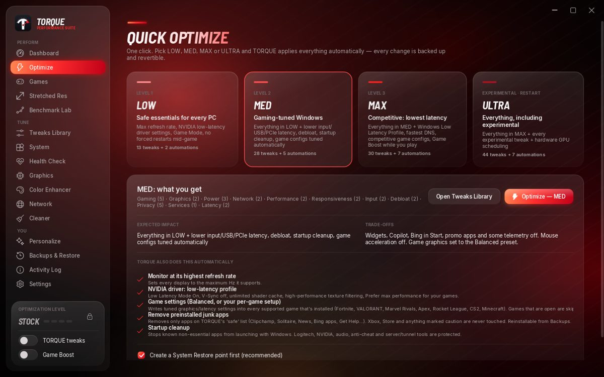
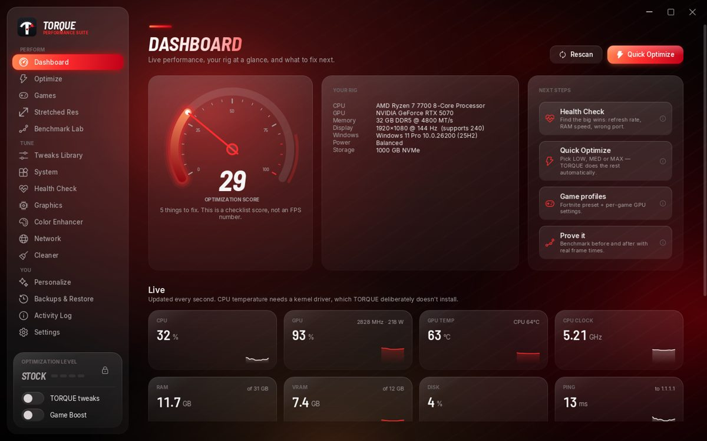
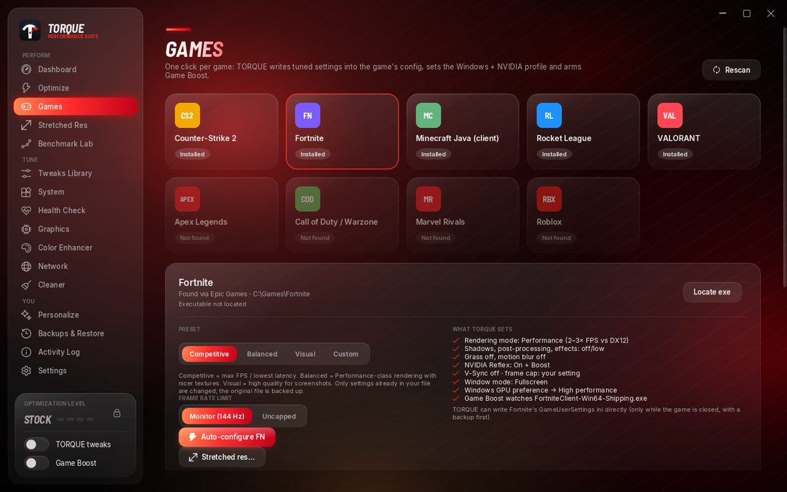
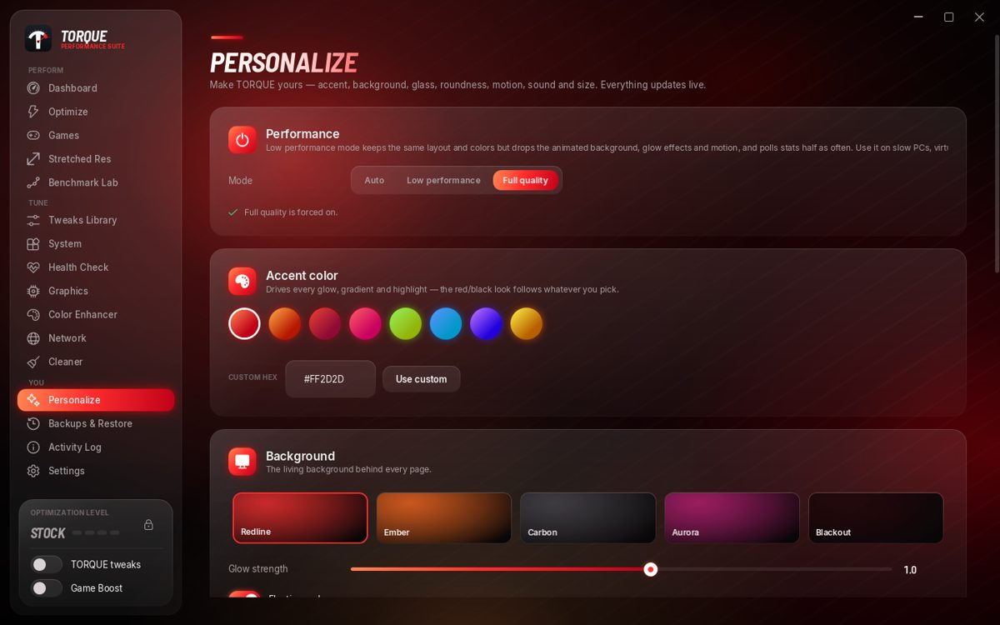

Your PC is
holding you back.
One click tunes Windows, your NVIDIA driver and your games for lower latency and smoother frames — LOW, MED, MAX or ULTRA. Every change is previewed first, backed up, and undoable with one switch.

What it does
⚡ One-click levels
LOW, MED, MAX or ULTRA. TORQUE applies Windows, driver and game tweaks automatically — with a full old → new preview first.
🎮 Auto-tunes your games
Fortnite (Performance mode + Reflex), VALORANT, CS2, Apex, Rocket League, Marvel Rivals, Minecraft — or build your own custom setup per game.
🟩 NVIDIA tuning
Low Latency Mode, V-Sync off, unlimited shader cache and max-performance power for your games, written straight into the driver.
↔ Stretched res
1750×1080, 1650×1080 and more in one click — custom resolution, full-screen scaling and Fortnite settings done for you.
🚀 Game Boost
While you play: performance power plan, higher game priority, background apps paused. Ctrl+Alt+B toggles it in-game.
↩ Fully revertible
Every change is backed up. Flip the TORQUE switch off and your PC goes back exactly how it was.
Install in 1 minute
- Download the zip above and extract it (right-click → Extract All).
- Run Torque.exe and click Yes on the admin prompt — it needs admin to change system settings.
- Windows will probably say "Windows protected your PC" because the beta isn't code-signed yet. Click More info → Run anyway.
- Create a password (or skip it), then go to Optimize, pick a level and click Optimize. Restart when it asks.
Is it safe?
Nothing hidden
Every tweak shows exactly which setting it changes, from what, to what — before you apply it. A System Restore point is created first.
Anti-cheat safe
Never injects into games, never reads game memory, never edits game files except each game's own settings file (backed up).
No sketchy tweaks
Defender, Windows Update, UAC and security mitigations are never disabled. No registry "cleaners", no mass-disabling services.
No tracking
No telemetry, no account. The only network use is the optional DNS speed test.
Verify your download — SHA-256 of TORQUE-v2.3.zip:4fbdc5915689ebc8424efa07a3c4a5633af69a3410ec79fff9982521074b199c
Screens



Beta testers
Found a bug or got results? Run Benchmark Lab before and after and send the screenshot. Settings → About → Activity log shows everything TORQUE did.
Undo everything any time: flip TORQUE tweaks off in the sidebar (or Backups & Restore → Revert everything), then restart.